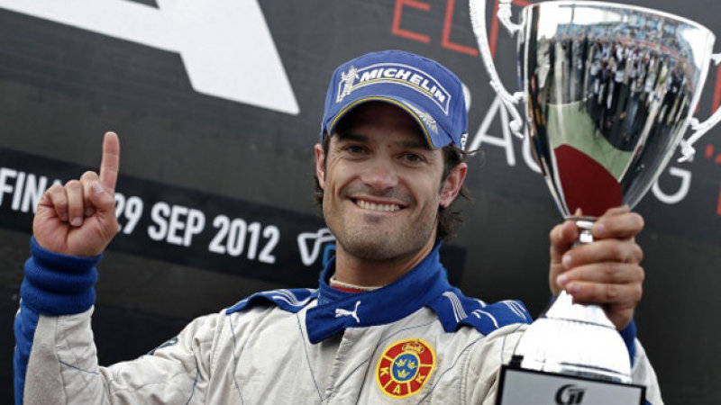

Det var en varm sommardag och gasdimman från avgasrören ligger tät vid startfältet. Det är jag mot Prins Carl Philip i ett porscherace. Jag sitter nervöst bakom ratten men jag är ändå superfokuserad på uppgiften, uppgiften att vinna över prinsen. startsignalen ljuder och båda bilarna tar av med en väldig fart. Det är väldigt jämt till en början men prinsen är i ledning efter första kurvan. Jag tänker för mig själv "Det här går inte, jag måste ta mig förbi på något sätt".
Jag tar ett strategiskt beslut och lägger mig tätt bakom honom för att komma undan vinden för att bygga upp farten för att sedan ta mig snabbt förbi honom.
Min plan lyckas och jag är förbi prinsen. Jag ligger före honom tills sista kurvan då slitaget på mitt högra bakdäck är för högt. Däcket sprängs och jag kan inte slutföra loppet. Prinsen tar chansen och kör före mig och är snabbast in i mål och därmed vinnaren av racet.
